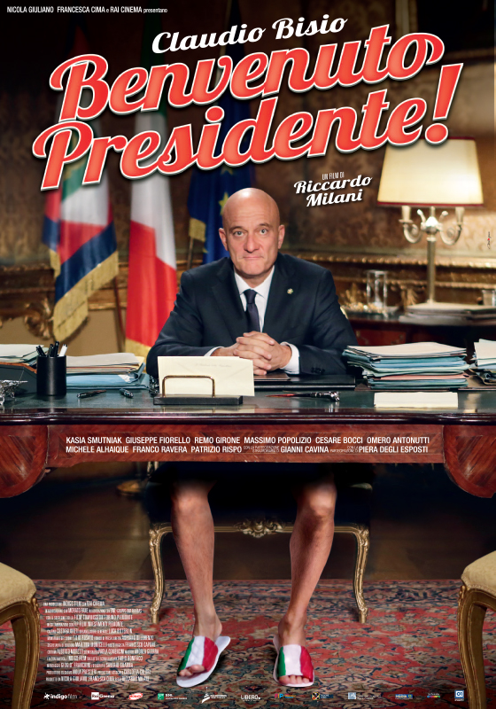
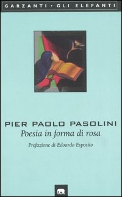
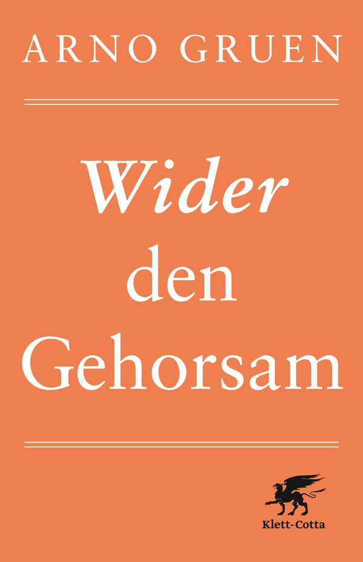

58:18 · 11 OPERE
Provare a navigare tra i flutti dell'attualità.
Il filo del discorso
Il contributo alterna una riflessione sul metodo del giudizio a una polemica sull’attualità collocabile nel marzo 2023. Dr Divago invita a partire dai presupposti e a formulare domande che non dipendano già dalle risposte desiderate. Il pasticciere e il medico di Platone, il presidente immaginato dal cinema e il riconoscimento del valore di Gödel servono a discutere il rapporto fra consenso, competenza e responsabilità.
Leggi la sintesi completaRiduci la sintesi
La lettura di Genesi collega poi la presenza dei giusti alla possibilità di una vita collettiva, mentre Florenskij introduce il legame fra sapienza e verità. Su questa base il relatore contesta le scelte militari, la comunicazione della pandemia, la condotta delle istituzioni e alcuni linguaggi dell’opposizione. Le accuse personali e le ipotesi di una regia comune restano sue affermazioni, senza essere trasformate in fatti accertati. Anche i confronti sanitari richiedono verifiche che il solo ragionamento per analogia non può sostituire. Il richiamo agli accordi di Monaco e alla persecuzione nazista sostiene una discussione sull’uso pubblico della storia; le equivalenze con il presente sono interpretazioni polemiche. Il finale difende la coerenza dei principi oltre le appartenenze e, con Pasolini e Arno Gruen, pone il problema della responsabilità di chi obbedisce, tace o rinuncia a valutare autonomamente.
I libri nel discorso

Gorgia
Identificazione probabile
Note sul riferimento
Copertina: Gorgia, Bompiani, giugno 2001, a cura di Giovanni Reale, testo greco a fronte, 384 pagine, ISBN 9788845291111. Copertina ufficiale blu, bianca e verde acqua con titolo e autore; edizione di riferimento non identificata nel video.
Immagine autentica dell’opera, controllata visivamente; l’edizione di riferimento non è attribuita al filmato.
Platone, medico e pasticciere davanti ai bambini: Gorgia 521e–522a, titolo non pronunciato, identificazione probabile.

Benvenuto Presidente!
Note sul riferimento
Locandina ufficiale · film 2013: LOCANDINA ufficiale del film del 2013 dalla produzione Indigo Film: Claudio Bisio seduto alla scrivania presidenziale con pantaloncini e pantofole tricolori, titolo rosso e regia di Riccardo Milani. Non presentata come copertina editoriale.
Immagine autentica dell’opera, controllata visivamente; l’edizione di riferimento non è attribuita al filmato.
Claudio Bisio, Giuseppe Garibaldi eletto per errore e titolo ricordato come Buongiorno Presidente: riscontrato Benvenuto Presidente!, 2013.

Costituzione della Repubblica Italiana
Note sul riferimento
Copertina dell’edizione Intra aggiornata al 2023: Intra · 2023 · introduzione di Umberto Vincenti
Copertina autentica del testo integrale, aggiornata alla legge costituzionale 26 settembre 2023 n.1. È successiva al filmato del 2019 e non rappresenta la versione storica letta dal relatore. Umberto Vincenti firma l’introduzione.
Ripudio della guerra come mezzo di risoluzione delle controversie: richiamo all’articolo 11, senza trasformare il commento in consulenza legale.

The Empty Campus
Note sul riferimento
Copertina: Lulu · edizione inglese di riferimento
Immagine associata all’ISBN di riferimento e controllata visivamente; edizione e traduzione non identificate come quelle citate o lette nel video.
The Empty Campus / Il campus vuoto, libro del relatore, esplicito.

Genesi
Note sul riferimento
Copertina: Einaudi, I libri della Bibbia / Einaudi Tascabili, 2000; introduzione di Steven Rose
Copertina dell’edizione autonoma Genesi, nella serie I libri della Bibbia, con introduzione di Steven Rose. Edizione scelta come riferimento iconografico; nessuna edizione è confermata nel video.
Genesi 18 e 19 e Sodoma e Gomorra espliciti. Corretto nelle note il protagonista ospitante in Genesi 19: Lot.

La colonna e il fondamento della verità. Saggio di teodicea ortodossa in dodici lettere
Note sul riferimento
Copertina: San Paolo · seconda edizione, ottobre 2010
Immagine autentica dell’opera, controllata visivamente; l’edizione di riferimento non è attribuita al filmato.
Pavel Florenskij e La colonna e il fondamento della verità espliciti.

Perché guariremo. Dai giorni più duri a una nuova idea di salute
Identificazione probabile
Note sul riferimento
Edizione ampliata successiva · Solferino 2024: Copertina ufficiale della SUCCESSIVA EDIZIONE AMPLIATA Solferino 2024, 320 pagine, ISBN 9788828214427: fondo chiaro, autore rosso e dicitura edizione originale con capitoli integrativi. Non è la copertina Feltrinelli 2020 e non è attribuita al video del contesto 2023.
Immagine autentica dell’opera, controllata visivamente; l’edizione di riferimento non è attribuita al filmato.
Libro di Speranza sottratto alla circolazione, senza titolo: identificazione probabile in Perché guariremo, edizione Feltrinelli 2020.

1984
Note sul riferimento
Copertina: Newton Compton · edizione illustrativa
Orwell e 1984 espliciti come lettura proposta nel 2020.

Il mondo nuovo
Note sul riferimento
Copertina della raccolta: Mondadori · Oscar Moderni · 2016
L’immagine mostra il volume Mondadori che riunisce Il mondo nuovo e Ritorno al mondo nuovo. Il collegamento nel video riguarda il primo romanzo, per allusione al titolo inglese; non identifica un’edizione usata dal relatore.
Brave New World di Aldous Huxley esplicito, forma nella trascrizione automatica normalizzata.

La ballata delle madri
Note sul riferimento
Copertina della raccolta: Garzanti · 2001
La ballata delle madri è contenuta in Poesia in forma di rosa. L’immagine mostra la raccolta Garzanti del 2001, con prefazione di Edoardo Esposito, non un volume autonomo della poesia né l’edizione del video.
Pasolini e la formula che madri avete avuto: identificazione nella Ballata delle madri, voce esistente.

Wider den Gehorsam (Contro l’obbedienza)
Note sul riferimento
Copertina: Copertina autentica Klett-Cotta, ISBN 9783608948912, opera del 2014: fondo arancio, autore e titolo bianchi, grifone nero dell’editore. Colophon verificato nell’estratto editoriale; non è una edizione italiana.
Immagine autentica dell’opera, controllata visivamente; l’edizione di riferimento non è attribuita al filmato.
Arno Gruen e il piccolo libro contro gli obbedienti: titolo originale riscontrato in Wider den Gehorsam, 2014.